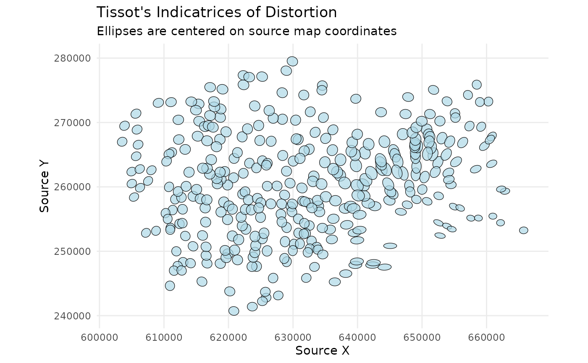

Plot Tissot's Indicatrices of Distortion
plot_indicatrices.RdVisualizes distortion by drawing Tissot's indicatrices (ellipses) at their original source locations.
Usage
plot_indicatrices(
distortion_sf,
scale_factor = 1,
fill_color = "lightblue",
border_color = "black"
)Arguments
- distortion_sf
An
sfobject of points returned byanalyze_distortion(). It must contain the columnsa,b, andtheta_a.- scale_factor
A numeric value to control the size of the plotted ellipses for better visibility. You will need to adjust this based on your map's scale.
- fill_color
A character string specifying the fill color of the ellipses.
- border_color
A character string specifying the border color of the ellipses.
Details
This function creates a powerful visual representation of
distortion, following the methodology of Boùùaert et al. (2016). It takes the
results from analyze_distortion() and draws an ellipse at each analyzed
point, centered on its source coordinate. This allows for a direct visual
assessment of distortion on the historical map's geographic space.
Each ellipse graphically shows the magnitude and direction of distortion at that location:
The shape of the ellipse shows the angular distortion (shear).
The size of the ellipse shows the areal distortion.
The orientation of the ellipse shows the direction of maximum scale.
Examples
# --- 1. Train a model and analyze distortion ---
data(gcps)
gam_model <- train_pai_model(gcps, method = "gam")
#> Training 'gam' model...
distortion_at_gcps <- analyze_distortion(gam_model, gcps)
#> Calculating distortion metrics for gam model...
#> Finalizing metrics from derivatives...
#> Distortion analysis complete.
# --- 2. Plot the indicatrices ---
# Note that the pai_model is no longer needed. The function plots the
# distortion centered on the source locations from the distortion_sf object.
# The scale_factor needs to be large enough to make the ellipses visible.
plot_indicatrices(
distortion_sf = distortion_at_gcps,
scale_factor = 20
)
#> Generating indicatrix polygons at source locations...
